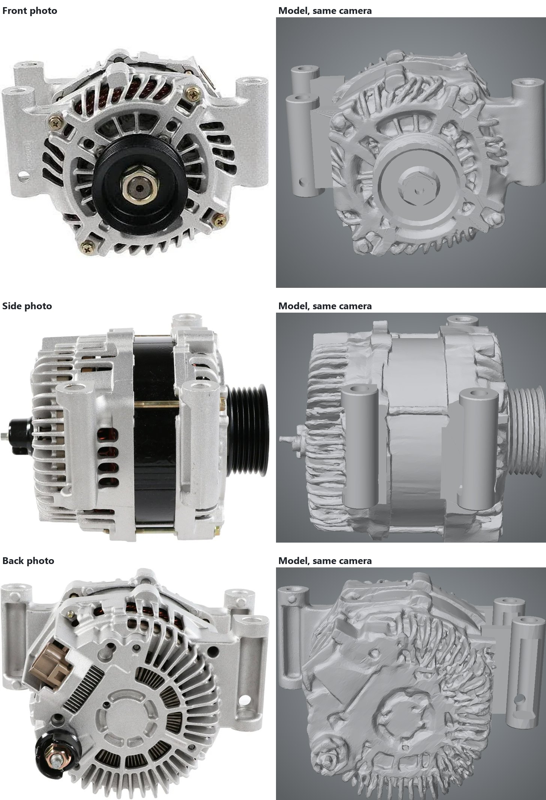

The first attempt was run by another AI coding agent, OpenAI's Codex. It gave the three photos to Hunyuan3D-2mv, Tencent's open neural network that generates a 3-D mesh straight from pictures. In seconds it produced something that is unmistakably an alternator. Turn it around, though, and the housing looks like wax left in the sun.
140,000triangles, generated
94.2 %outline match, average
58 %photo edges reproduced
3.45 mmaverage depth error
Loading model…
Drag to orbit · right-drag to pan · scroll or pinch to zoom
Each photo next to the model

Left: the photo. Right: the model from the same camera. The overall shape lands, but the vents are filled in, the ribs wander and the edges are soft and wavy.
What happened
GenerateThe network turned the three photos into one mesh. It never measures anything; it produces the most plausible-looking object it has learned, at no particular size.
Patch the worst partsCodex rebuilt the pulley and two mounting ears as clean shapes and fused them into the generated mesh. The model above is that patched version.
Hit the wallThe housing stayed as generated: warped edges, vent openings filled in and rounded over, cooling ribs that don't line up. A finer mesh only drew the same mistakes more sharply. The pulley's recess was a guessed number, only about an eighth of the pulley's depth.
Why its edge score is closer than it looks
On edges matched, this model nearly ties the final one (58 % against 61 %). That's an artefact: a wrinkled surface is covered in creases, and some of them land near real edges by chance. The other measures expose it. Its outline overlap is lower, its depth error is 1.4× the final model's, and in the side photo fewer than half its edges (44 %) are really there.
What this taught
A model that imagines the part can't be corrected into one that measures it.
The mesh has no dimensions to adjust, only millions of loose points. So the next attempt threw it away and started from shapes with real sizes.
Scorecard
All three models, scored by the same program against the same three photos. Each figure is the average of the front, side and back photo.
Outline match: how much of the part's outline in each photo the model covers, and nothing more.
Edges matched: the share of edges visible in the photos that the model reproduces within 3 pixels. Edge precision is the reverse: the share of the model's edges that are really in the photos.
Depth error: average distance from the model's surface to a 3-D point cloud recovered from the photos, on surfaces the photos actually show.
The simple-shapes model is scored with the cameras its own pipeline recovered; the other two use the measured model's cameras. The melted model was given its best possible placement first, so the comparison is fair to it.